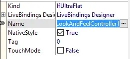
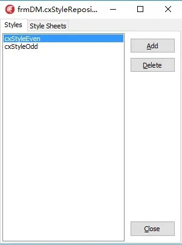
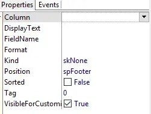

从其它平台迁移而来
汉化
- 在
DevExpress选项卡找到TcxLocalizer控件放到窗体上，为了通用，我是放到DataModule窗体上。

- 准备好汉化的资源文件或配置文件（我使用的是后者），在
DataModule的Create事件里写上如下代码
|
|
- 在有cxGrid或其实Dev控件的单元引用DataModule单元。
更改视觉样式
-
在
DevExpress选项卡找到TcxLookAndFeelController控件放到DataModule窗体上。 -
在有
cxGrid或其它Dev控件的单元引用DataModule单元。 -
在要更改视觉样式的代码段里设置
TcxLookAndFeelController控件的Kind属性和NativeStyle属性。

让cxGrid的数据以斑马线的方式显示，即奇偶行分别使用不同样式
-
在
DevExpress选项卡找到TcxStyleRepository控件放到DataModule窗体上。 -
双击
cxStyleRepository控件，打开如下窗口，点Add添加两个样式，并命名。

- 分别在属性中设置不同的样式，颜色、字体、字号、字体颜色等。

-
在有
cxGrid的单元中引用DataModule单元。 -
选中
cxGrid的cxGridDBTableView，展开Styles，分别关联ContentEven和ContentOdd。 -
另外也可设置
Header、Selection和Inactive。Header改变的是表头的样式，Selection改变的是当前选择行的样式，Inactive改变的是cxGrid失去焦点时当前选择行的样式。
不显示分组框
设置cxGridDBTableView的OptionsView下的GroupByBox属性为False。
显示合计等脚注
-
设置
cxGridDBTableView的OptionsView下的Footer属性为True。 -
点
cxGrid的Customize...按钮，弹出对话框，选择Summary标签页，在Footer子标签页中点Add增加合计项目。

- 选择增加的项目，在属性中设置关联的列、字段名等属性。

设置行号
-
增加一列，不关联数据库字段，设置好属性。
-
在该列的
OnGetDataText事件中写如下代码：
|
|
编辑完成前光标不能离开当前行
- 在
cxGridDBTableView的OnCanFocusRecord事件中写入类似以下的代码：
|
|
只读
设置cxGridDBTableView.OptionsData.Editing属性为False。
选择整行
设置cxGridDBTableView.OptionsSelection.CellSelect属性为False。